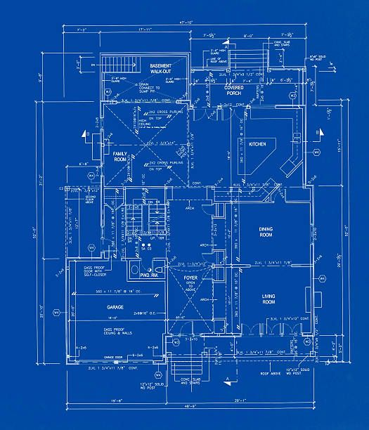
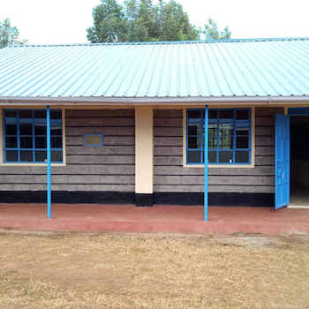
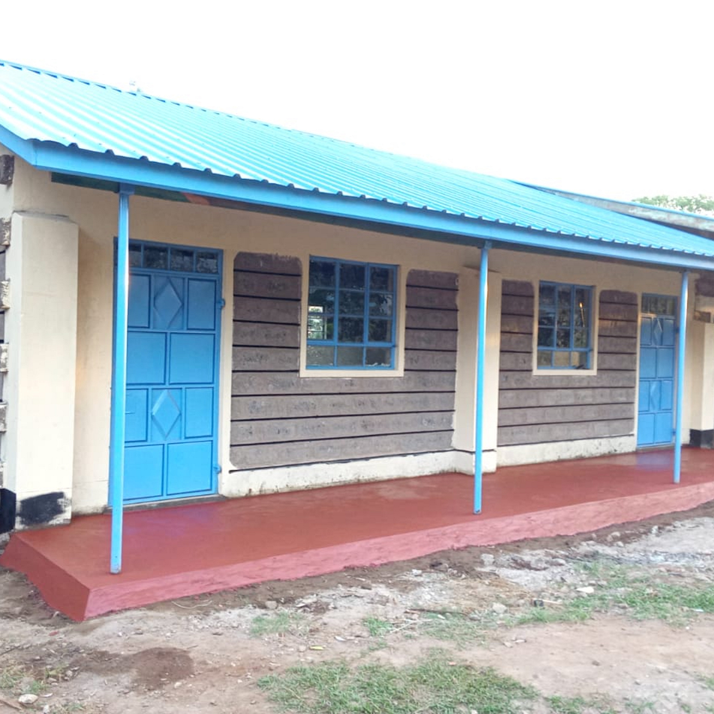

Our Completed Projects
Explore some of our successfully completed construction projects across Migori County and beyond

Bande Girls Secondary School
Construction of two modern classrooms with complete finishing, electrical installations, and furniture. Project completed in November 2022 and handed over to the Ministry of Education. The classrooms feature modern lighting, ventilation, and security systems.

Moi Suba Girls Secondary School
Construction of modern dining hall and additional CBC classrooms. Total contract sum of Ksh 4,997,000. Project completed in phases with first payment of Ksh 1,990,000 certified in December 2021. The dining hall accommodates 300 students at a time.

St. Michael Nyarongi Secondary
Construction of modern CBC classrooms as part of educational infrastructure development under government programs. Contract sum of Ksh 788,220. Project designed to support the Competency Based Curriculum with appropriate space and facilities.

Various School Projects
Multiple classroom construction projects for various schools in Migori County under NG-CDF and government programs. Our ongoing projects include additional CBC classrooms, laboratory constructions, and administrative buildings for educational institutions.